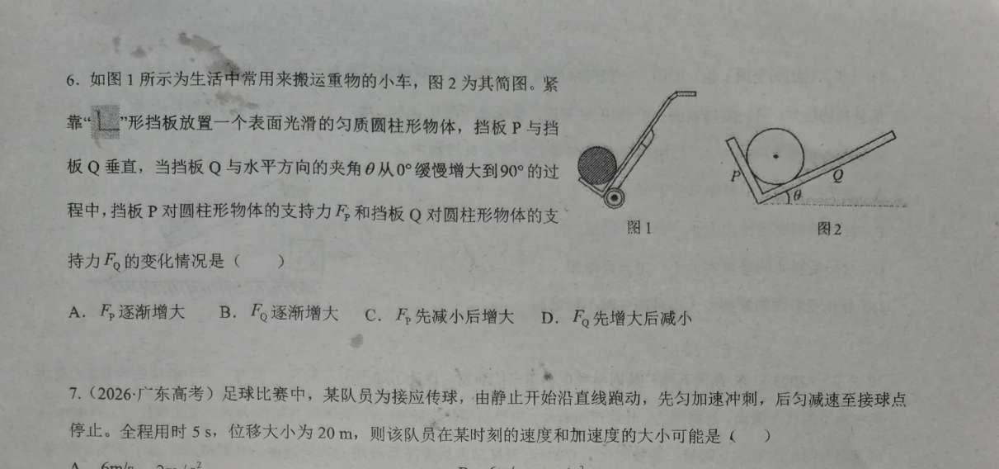

生活小车 · 单选 · 答案：A | θ 滑块 + 三力动态三角形
← 返回互动课件
物理：两挡板互相垂直 ⇒ 支持力 FP⊥FQ，与固定重力 G 构成直角三角形力三角形（G 为斜边）：FP=G·sinθ单调增大、FQ=G·cosθ单调减小。As θ:0°→90°，FP:0→G，FQ:G→0。
总评：Q 板缓慢转动属动态平衡，命中「先减后增判断」(phy0192)、「动态平衡识别·缓慢」(phy0188)、「相似三角形法」(phy0195) 与「平衡状态判定」(phy0147)，契合度高（4 张）。本模型因挡板互相垂直，FP/FQ 恰为直角三角形（FP=Gsinθ 增、FQ=Gcosθ 减），曲线单调，无需新卡。
| 卡 | 知识点 | 契合 |
|---|